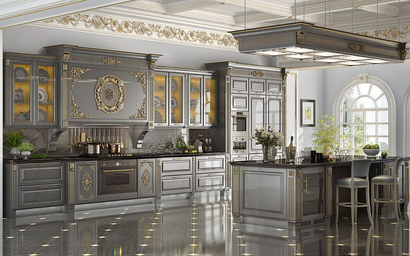

ABOUT US
At InteriorWorks, we are passionate about transforming spaces into inspiring environments that reflect the unique personalities and lifestyles of our clients. With a keen eye for design and a commitment to excellence, our team of experienced interior designers combines creativity with functionality to bring your vision to life. From residential homes to commercial spaces, we specialize in creating interiors that are not only visually stunning but also functional and comfortable. With a client-centric approach, we work closely with each client to understand their needs, preferences, and budget, ensuring that every project is tailored to their specific requirements. With a focus on sustainable design practices and the latest trends, we strive to create spaces that are not only beautiful but also environmentally friendly. Whether you're looking to refresh your home or revitalize your commercial space, we're here to turn your dreams into reality."
